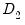
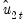

To estimate your panel equation you must first be working with a panel structured workfile. Next, select or then select in the dropdown menu. Alternately, you may enter the
cointreg keyword in the command window.
The and are used to describe your triangular regression specification.
You should enter the name of the dependent variable,  , followed by a list of cointegrating regressors,
, followed by a list of cointegrating regressors,  , in the
, in the edit field, then use the drop-down menu to specify the deterministic trend components (, , ,). Your selection will include all trends up to the specified order. You may use the edit box to add deterministic trend regressors that are not offered in the pre-specified list.
When performing FMOLS estimation you may use the drop-down menu and the edit field to specify  deterministic trends that are included in the regressors equations but not in the cointegrating equation.
You may also indicate whether you wish to estimate the regressors innovations  in Equation (57.2)
in Equation (57.2) indirectly by estimating the regressors equations in levels and then differencing the residuals or directly obtain , by estimating the differenced regressors equations. Check the box to estimate the regressors equations in differences.
The section is used to specify the estimation method. You should use the dropdown menu to choose between FMOLS and DOLS estimation. When you make your selection, the main dialog page and the options page will both change to display the options associated with your selection.
To estimate your equation using panel FMOLS, select in the dropdown menu. The main dialog and options pages will change to show the available settings.
See “Fully-Modified OLS” for a detailed description of the methods
Additionally, you may click on the button to specify options for computing the long-run covariances. By default, EViews will estimate the individual and long-run average covariance matrices using a (non-prewhitened) kernel approach with a Bartlett kernel function and Newey-West fixed bandwidth. To change the whitening or kernel settings, click on the button and enter your changes in the sub-dialog.
Clicking on the tab of the estimation dialog shows the settings for computing the coefficient covariance for the long-run coefficients and specifying the default coefficient name:
For pooled estimation, you may choose between the moment estimator or a method as described in
“Pooled FMOLS”. You may also elect to apply or not apply a degrees-of-freedom adjustment to the estimated coefficient covariance.
You should use the drop-down to choose between the pooled, weighted, and group mean (averaged) DOLS estimators:
If you specify pooled weighted estimation, EViews will display a button which will allow you to specify the settings used in computing the long-run variances for use as weights.
Next, you should specify the method of selecting leads and lags. By default, the is with and each set to 1. You may specify a different number of lags or leads or you can use the dropdown to enable automatic information criterion selection of the lag and lead orders for each cross-section by selecting , , or . Note that the automatic lag selection method is conducted by estimating separate regressions for each cross-section. If you select , EViews will estimate static OLS.
When you are done modifying the main estimation settings, click on the tab of the dialog to see the options for computing the long-run coefficient covariance matrix estimates and specifying the default coefficient name:
For pooled estimation you will be prompted to specify the moment estimator or a method as described in
“Pooled DOLS”. You will also be prompted to specify the use of a estimator or estimator for use in scaling the moment matrix or in computing the individual variance weights sandwich estimator, and to choose whether to perform a .
The method re-scales the ordinary least squares coefficient covariance using an estimator of the long-run variance of DOLS residuals (multiplying by the ratio of the long-run variance to the ordinary squared standard error). Alternately, you may employ a sandwich-style covariance matrix estimator.
In both cases, you may use the options button (labeled or respectively) to override the default method for computing the long-run variance (non-prewhitened Bartlett kernel and a Newey-West fixed bandwidth). You may also select covariances or covariances. The latter two methods are offered primarily for comparison purposes.


 is the number of coefficients in the equation. As in the non-panel setting, we urge careful thought in the use of automatic selection methods since the purpose of including leads and lags is to remove long-run dependence, and automatic methods were not designed for this purpose.
is the number of coefficients in the equation. As in the non-panel setting, we urge careful thought in the use of automatic selection methods since the purpose of including leads and lags is to remove long-run dependence, and automatic methods were not designed for this purpose.